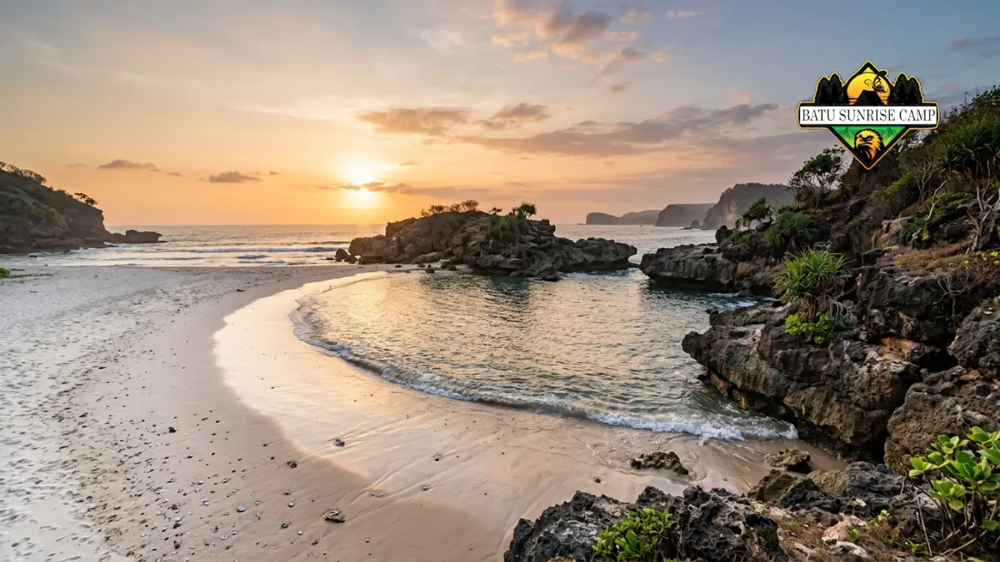

Pantai dengan tempat camping terbaik di Jogja umumnya berada di Gunungkidul, seperti Siung, Wediombo, Wohkudu, dan Watu Kodok, dengan pilihan tergantung kebutuhan dan pengalaman berkemah.
Gunungkidul mencatat 2.383.892 kunjungan wisata hingga pertengahan 2026 dari target tahunan 3.239.205 kunjungan, sehingga pantai populer sering padat saat libur.
Pantai camping dinilai dari akses jalan, fasilitas dasar, keamanan ombak, area tenda, dan kejelasan pengelolaan.
Biaya camping umumnya puluhan ribu rupiah per orang, tergantung pantai dan jenis layanan.
Hari kerja dengan cuaca cerah menjadi waktu paling nyaman untuk berkemah di pantai.
Air bersih, perlengkapan tahan angin, dan kantong sampah adalah bekal wajib.
Seberapa ramai pantai Gunungkidul pada 2026?
Pantai Gunungkidul sangat ramai pada 2026: wisatawan mencapai 2.383.892 kunjungan hingga pertengahan tahun, dari target tahunan 3.239.205 kunjungan menurut Disparekrafpora Gunungkidul.
Dinas Pariwisata Gunungkidul mencatat 156.501 wisatawan di tempat pemungutan retribusi pantai selama enam hari libur panjang, 27 Mei sampai 1 Juni 2026.
Puncak kunjungan terjadi pada Minggu, 31 Mei 2026, dengan 67.721 orang, sedangkan hari terendah, Rabu 27 Mei, hanya 11.105 orang.
Pada libur Lebaran 2026, total kunjungan sejak 19 hingga 24 Maret 2026 mencapai 230.669 wisatawan, jauh di atas target awal 93.191 orang.
Sebagai pembanding, realisasi kunjungan wisatawan Gunungkidul sepanjang 2025 tercatat 3.298.392 orang.
Bagi pengemah, angka tersebut berarti selisih antara hari biasa dan hari libur sangat besar. Area camping di pantai populer bisa padat dan ramai saat libur panjang, sedangkan hari kerja jauh lebih lengang.
Apa yang dimaksud dengan camping di pantai Jogja?
Camping di pantai Jogja adalah kegiatan mendirikan tenda dan bermalam di area pantai resmi, umumnya di Kabupaten Gunungkidul, dengan membayar tiket masuk dan retribusi berkemah.
Pantai selatan Daerah Istimewa Yogyakarta membentang dari Kulon Progo, Bantul, hingga Gunungkidul.
Gunungkidul memiliki garis pantai berkarang, teluk kecil, dan banyak pantai yang relatif sepi, sehingga sejumlah pengelola setempat membuka area berkemah.
Camping pantai cocok bagi pecinta alam, keluarga, komunitas, dan pemburu matahari terbenam maupun langit malam berbintang.
Manfaat utamanya adalah suasana tenang, biaya yang lebih murah daripada penginapan, dan kedekatan dengan laut.
Batasannya meliputi angin kencang, pasir yang masuk ke perlengkapan, akses jalan berliku, fasilitas terbatas di pantai terpencil, serta risiko ombak besar di pesisir Samudra Hindia.
Apa kriteria pantai dengan tempat camping terbaik di Jogja?
Pantai camping terbaik dinilai dari lima kriteria: akses jalan, fasilitas dasar, keamanan ombak, area datar untuk tenda, dan kejelasan pengelolaan serta biaya retribusi.
Tidak ada satu pantai yang unggul di semua kriteria, sehingga pilihan terbaik bergantung pada prioritas pengunjung.
- Akses jalan: Jalan menuju pantai terpencil bisa sempit, menanjak, dan licin saat hujan. Individu yang baru memulai merasa lebih terlayani dengan tersedianya akses transportasi yang dapat menjangkau area berdekatan dengan garis pantai.
- Fasilitas dasar: Toilet, air bersih, warung, mushola, dan penerangan menentukan kenyamanan bermalam.
- Keamanan ombak: Pantai berteluk atau berlaguna cenderung lebih terlindung, tetapi berenang tetap harus mengikuti arahan petugas.
- Area tenda: Pasir datar yang jauh dari garis pasang dan memiliki peneduh alami seperti pohon cemara lebih ideal.
- Pengelolaan: Pos retribusi, pengelola atau kelompok sadar wisata, dan aturan yang jelas mengurangi risiko salah paham serta kecelakaan.
Pantai mana saja yang cocok untuk camping di Jogja?
Pantai yang umum dipilih untuk camping di Jogja meliputi Siung, Wediombo, Sedahan, Wohkudu, Watu Kodok, Jungwok, Kesirat, dan Goa Cemara, masing-masing dengan karakter berbeda.
Apakah Pantai Siung cocok untuk camping?
Pantai Siung berada di Dusun Wates, Desa Purwodadi, Kecamatan Tepus, Gunungkidul, dan dikenal dengan tebing tinggi yang cocok untuk panjat tebing, tetapi aksesnya tidak mudah.
Pantai ini cocok bagi pengunjung yang menyukai lanskap tebing dan siap menempuh jalan menantang.
Pada 2025, tiket masuk sekitar Rp5.000 dan biaya camping tambahan Rp15.000. Bukit Pengilon di sebelah timur pantai menawarkan pemandangan gugusan pantai sekitarnya.
Bagaimana suasana camping di Pantai Wediombo dan Sedahan?
Pantai Wediombo terletak di daerah Pendowo, Jepitu, dan dikenal dengan pasir luas, laguna, serta ombak besar yang diminati peselancar pemula hingga menengah.
Pantai Sedahan berada di sebelah timur Wediombo, dan pengunjung memarkir kendaraan di Wediombo lalu melanjutkan ke Sedahan.
Keduanya cocok untuk pencari suasana sepi, tetapi ombak yang kuat membuat berenang tidak disarankan.

Laguna pasir putih di Pantai Wediombo, area favorit camping dengan panorama ombak besar di pesisir selatan Gunungkidul.
Mengapa Pantai Wohkudu populer untuk camping?
Pantai Wohkudu di Kecamatan Panggang berupa teluk kecil yang tenang dan terkenal dengan pemandangan matahari terbenam.
Tiket masuk sekitar Rp2.000 per orang dan camping dikenai tambahan sekitar Rp20.000 per orang berdasarkan laporan September 2025. Pantai ini buka setiap hari tanpa jam operasional khusus.
Seperti apa glamping di Pantai Watu Kodok?
Pantai Watu Kodok di Gunungkidul menyediakan glamping dengan tenda sewaan. Pengelola menawarkan paket reguler, VIP, dan VVIP, serta tersedia warung makan dengan menu seafood.
Pengunjung disarankan melewati Dusun Playen karena rute melalui Wonosari lebih memutar. Pilihan ini cocok bagi pemula dan keluarga. Panduan lanjutan tersedia di artikel pantai camping untuk pemula di Jogja. Sumber: RRI Yogyakarta.
Bagaimana dengan Jungwok, Kesirat, dan Goa Cemara?
Pantai Jungwok di Desa Jepitu, Girisubo, memiliki tiket masuk dan camp sekitar Rp5.000. Pantai Kesirat menawarkan camping di atas tebing dengan pemandangan laut selatan.
Pantai Goa Cemara, yang terletak di Kabupaten Bantul, terkenal karena deretan pohon cemara yang secara umum dimanfaatkan sebagai lokasi perkemahan.
Tarif dan aturan di setiap lokasi dapat berubah, sehingga konfirmasi ke pengelola tetap diperlukan.
Berapa biaya camping di pantai Jogja?
Biaya camping di pantai Jogja umumnya berkisar puluhan ribu rupiah per orang, terdiri atas tiket masuk dan retribusi berkemah, dan dapat berubah sewaktu-waktu.
Contoh dari laporan 2025: Pantai Siung sekitar Rp20.000 per orang (tiket Rp5.000 ditambah camp Rp15.000), Pantai Wohkudu sekitar Rp22.000 per orang (tiket Rp2.000 ditambah camp Rp20.000), dan Pantai Jungwok sekitar Rp5.000. Glamping dengan tenda sewaan dihargai berdasarkan paket, sehingga biayanya lebih tinggi.
Biaya tambahan yang perlu dihitung meliputi parkir, bahan bakar, makan, air bersih, dan sewa perlengkapan.
Kapan waktu terbaik camping di pantai Jogja?
Waktu terbaik camping di pantai Jogja adalah hari kerja pada musim kemarau dengan cuaca cerah, karena pantai lebih sepi dan risiko hujan lebih rendah.
Pada Maret 2026, BPBD Gunungkidul memperpanjang status siaga darurat bencana hidrometeorologi hingga 31 Maret 2026 untuk mengantisipasi cuaca ekstrem, tanah longsor, dan banjir.
Peringatan semacam ini menunjukkan bahwa musim hujan menuntut kehati-hatian ekstra bagi pengemah.
Saat kemarau, pengunjung perlu membawa persediaan air lebih banyak karena pasokan air di wilayah karst dapat terbatas.
Sebelum berangkat, periksa prakiraan cuaca di situs BMKG.
Apa kesalahan umum saat camping di pantai?
Kesalahan umum camping di pantai adalah mendirikan tenda terlalu dekat air, kurang membawa air bersih, tidak mengecek cuaca, berenang di ombak besar, dan meninggalkan sampah.
- Tenda terlalu dekat air: Air pasang dapat menjangkau area yang tampak kering pada sore hari.
- Air bersih kurang: Banyak pantai terpencil tidak memiliki sumber air tawar yang memadai.
- Tenda tidak tahan angin: Angin laut pada malam hari dapat merobohkan tenda yang dipasang tanpa pasak kuat.
- Mengabaikan peringatan: Petugas dan pengelola mengenal pola ombak setempat dengan baik.
- Meninggalkan sampah: Sampah mencemari pantai dan merugikan pengunjung berikutnya.
Bagaimana tips camping di pantai agar nyaman dan bertanggung jawab?
Camping pantai nyaman dimulai dari memilih lokasi resmi, datang sebelum sore, membawa perlengkapan tahan angin dan air bersih, serta membawa pulang seluruh sampah.
- Tiba sebelum matahari terbenam agar tenda berdiri dalam kondisi terang.
- Gunakan pasak panjang dan tali tambahan untuk tenda di pasir.
- Bawa senter, powerbank, obat pribadi, dan perlengkapan P3K.
- Simpan makanan dalam wadah tertutup agar tidak mengundang hewan.
- Gunakan jaket dan alas tebal karena suhu malam di tepi laut terasa dingin.
- Kumpulkan semua sampah dan bawa pulang bila tempat sampah tidak tersedia.
Pantai camping mana yang cocok untuk siapa?
| Tipe pengunjung | Pilihan pantai | Alasan utama |
|---|---|---|
| Pemula dan keluarga | Watu Kodok | Sewa tenda glamping dan warung makan |
| Pencari ketenangan dan sunset | Wohkudu | Teluk kecil, biaya terjangkau |
| Pecinta tebing dan petualangan | Siung | Tebing karang dan lanskap dramatis |
| Pencari suasana sepi dan selancar | Wediombo, Sedahan | Pasir luas, laguna, ombak besar |
| Penyuka pemandangan tebing | Kesirat | Camping di atas tebing menghadap laut selatan |
Kesimpulan
Pantai dengan tempat camping terbaik di Jogja bergantung pada pengalaman dan kebutuhan pengunjung.
Pemula dapat memulai dari Watu Kodok atau Wohkudu, sedangkan pengemah berpengalaman dapat menjajal Siung, Wediombo, atau Sedahan.
Pilih hari kerja, cek cuaca BMKG, konfirmasi tarif ke pengelola, bawa air bersih secukupnya, dan bawa pulang semua sampah.